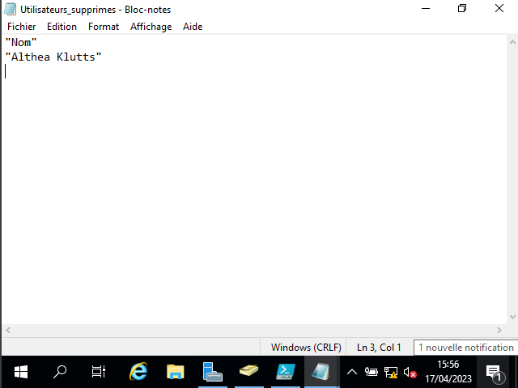

Active Directory (AD) est un annuaire de services de domaine Windows Server. Il est utilisé pour stocker des informations sur les utilisateurs, les ordinateurs, les groupes et les autres ressources d'un réseau, et pour fournir des services d'authentification et d'autorisation aux utilisateurs et aux applications.
L'AD est organisé en unités d'organisation (OU), qui sont des conteneurs logiques pour les objets AD. Les OUs peuvent être utilisées pour simplifier l'administration des ressources, en permettant aux administrateurs de regrouper les objets en fonction de leurs fonctions ou de leur emplacement dans l'organisation.
La création d'une OU dans l'AD Windows Server est assez simple. Nous utilisons le nom des départements comme nom d'OUs et les insérons dans le script de création d'OUs :
New-ADOrganizationalUnit -Name Technique -Path "dc=projet,dc=local"
New-ADOrganizationalUnit -Name Groups -Path "ou=Groups,ou=Technique,dc=formation,dc=local"
New-ADOrganizationalUnit -Name Computers -Path "ou=Computers,ou=Technique,dc=formation,dc=local"
New-ADOrganizationalUnit -Name Support -Path "ou=Support,ou=Technique,dc=formation,dc=local"
New-ADOrganizationalUnit -Name Prod -Path "ou=Prod,ou=Technique,dc=formation,dc=local"
New-ADOrganizationalUnit -Name Dev -Path "ou=Dev,ou=Technique,dc=formation,dc=local"
Clear-Host
function Set-OU ($Service) {
if ($Service -like "Dev") {
return "OU=Dev,OU=Technique,DC=projet,DC=local"
} elseif ($Service -like "Prod") {
return "OU=Prod,OU=Technique,DC=projet,DC=local"
} elseif ($Service -like "Support") {
return "OU=Support,OU=Technique,DC=projet,DC=local"
} else {
Write-Host "OU non-reconnue" -ForegroundColor Red
}
}
function Find-User ($User) {
$User = Get-ADUser -Filter {Name -eq $User}
if ($User) {
return $true
} else {
return $false
}
}
$usersExistants = @()
$usersSupprimes = @()
Import-Csv -Path "./Desktop/users.csv" -Delimiter ";" | ForEach-Object {
$name = $_.prenom + " " + $_.nom
$samAccountName = $_.prenom.Substring(0, 1) + "." + $_.nom
$path = Set-OU -Service $_.service
$password = ConvertTo-SecureString -String "Projet34!" -AsPlainText -Force
Ensuite, pour chaque personne du fichier.csv, on crée les variables qui seront réutilisées lors de la création d'user sur l'AD. On utilise la fonction Import-Csv
if (Find-User -User $name) {
Write-Host "Utilisateur $name existe déjà !" -ForegroundColor Red
$usersExistant = @{
nom = $_.nom
prenom = $_.prenom
service = $_.service
}
$usersExistants += $name
} else {
New-ADUser `
-Name $name `
-GivenName $_.prenom `
-Surname $_.nom `
-SamAccountName $samAccountName `
-UserPrincipalName "$samAccountName@projet.local" `
-Path $path `
-AccountPassword $password `
-Enabled $true `
-ChangePasswordAtLogon $true
if (Find-User -User $name) {
Write-Host "Utilisateur $name ajouté !" -ForegroundColor Green
}
}
}
$usersActifs = Get-ADUser -Filter *
foreach ($user in $usersActifs) {
$name = $user.Name
if (($name -ne "Administrateur") -and ($name -ne "Invité")) {
if ($name -notin (Import-Csv -Path "./Desktop/users.csv" -Delimiter ";" | ForEach-Object {$_.prenom + " " + $_.nom})) {
Write-Host "L'utilisateur $name doit être supprimé de l'Active Directory."
$usersSupprimes += $name
}
}
}
foreach ($user in $usersSupprimes) {
Remove-ADUser -Identity $user -Confirm:$false
Write-Host "L'utilisateur $user a été supprimé de l'Active Directory." -ForegroundColor Green
}
Si le nom d'un utilisateur enregistré n'est pas dans le fichier.csv, alors il est supprimé et son nom est enregistré dans la variable correspondante. Cela peut etre utile dans le cas d'utilisateurs temporaires comme les stagiaires ou les intervenants. La fonction Remove-ADUser permet de faire cela.
($usersExistants | Select-Object @{Name="Nom";Expression={$_}}, @{Name="Prenom";Expression={$_.Value.prenom}}) | Export-Csv -Path "./Desktop/Utilisateurs_dej_connus.csv" -Delimiter ";" -NoTypeInformation
($usersSupprimes | Select-Object @{Name="Nom";Expression={$_}}) | Export-Csv -Path "./Desktop/Utilisateurs_supprimes.csv" -Delimiter ";" -NoTypeInformation


